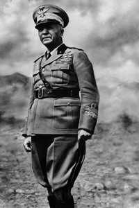

Lezione 19  La seconda guerrra mondiale
La seconda guerrra mondiale

-
240
330
-
300
330
-
180
300
-
95
395
-
350
775

CAMPO IMPERATORE
Il re Vittorio Emanuele III destituisce Benito Mussolini, che era stato sfiduciato dal Gran Consiglio del fascismo il 25 luglio, e lo sostituisce con il maresciallo Pietro Badoglio (in fotografia), incaricato di trattare l'armistizio con gli Alleati.
Il Duce viene imprigionato e trasferito da un luogo all'altro fino a uno sperduto albergo di Campo Imperatore, sul Gran Sasso, dove arriva il 28 agosto. Qui, il 12 settembre, i paracadutisti tedeschi lo liberano con un audace colpo di mano e lo trasportano in Germania per preparare il suo ritorno alla guida della Repubblica Sociale Italiana.SICILIA
L'Italia era considerata il "ventre molle" dell'Asse. Tra il 9 e 10 luglio 160 mila soldati alleati sbarcano nel sud della Sicilia senza incontrare troppa resistenza, e iniziano a risalire verso nord.
In trentotto giorni, nonostante singoli episodi di grande eroismo - ci furono reparti che andarono a combattere senza le scarpe - tutta l'isola viene liberata.SALÒ
Stemma e sigillo della Repubblica Sociale Italiana, che viene istituita il 23 settembre. La sede del governo è Salò, sul lago di Garda, per la sua posizione ben difesa, vicina alle grandi fabbriche del nord e facilmente accessibile dal Terzo Reich.
Mussolini viene proclamato capo della repubblica. Salò rivendica la propria sovranità sull'intero Regno d'Italia, ma dipende completamente dalle forze tedesche di occupazione, che peraltro non si fidano della loro creatura: le province italiane di confine con il Reich vengono amministrate direttamente dal Tirolo e dalla Carinzia.VARSAVIA
A maggio a Varsavia viene completamente distrutto il ghetto, che nel 1940 ospitava 380 mila ebrei, ed era stato isolato dal resto della città con un muro. Inizialmente gli ebrei non reagivano ai rastrellamenti e alle deportazioni. Quando diventa chiara la sorte che li attende nei campi di concentramento ci sono alcuni episodi di resistenza armata, seguiti da veri e propri combattimenti.
La rivolta viene stroncata nel sangue: settemila ebrei muoiono con le armi in pugno, altri seimila bruciati nelle case in fiamme. Gli ultimi cinquantamila occupanti vengono deportati a Treblinka. I tedeschi perdono 330 uomini.TEHERAN
Franklin Delano Roosvelt, Winston Churchill e Josif Stalin si incontrano a Teheran il 28 novembre. Ormai è chiaro che gli alleati vinceranno la guerra, e i tre capi di stato discutono per la prima volta della futura riorganizzazione del continente europeo.